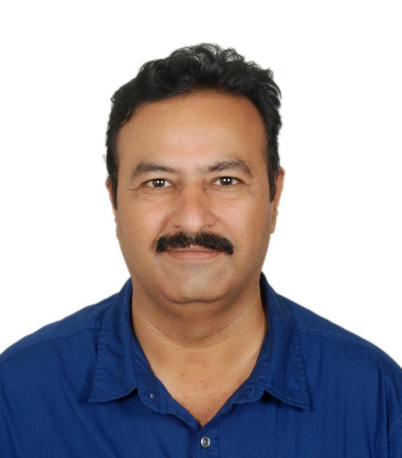

Resume

Hitesh Panchal
Plot # 128, Maitry, RSC-13, Sec-8,
Charkop,
Kandivali-West,Mumbai-64.
mail me
98211434343
D.O.B : 9thNov,1970.
Objective
To be a part of the solution and not the problem.
Experience
I have been the proprietor of Reboot Technologic since December 1993. We
deal in computers, networking & communication products. We also provide
technological solutions for our customers.
Our customers are from
various professions viz. Hotels, Architects, CAs, Small and Medium
Industries, Hospitals, SOHO, Service industries.
Employment history
Running my own business. (1993-till date)
- Engaged in Customer Support for Computers and Office automations.
- Selling, Installation, maintenance of Computers.
-
Proficient in installation of
Servers/Desktops/Laptops/Printers/Scanners.
-
Hands on experience on Microsoft operating system from DOS to Windows 11
and Server OSes.
-
Basic installation of Microsoft Servers and configuring Domains and
attaching the clients to servers. Providing basic securities to the
users.
-
Knowledge of VMWare Workstations and Virtual Box to simulate a testing
environment for servers, before implementation on client site.
-
Implementation of CCTV system. I have worked on Hikvision brand and sold
and maintained varied products like Analog and IP based CCTV of the
mentioned brands for small and medium offices.
- Understand problem and extract solutions based on client’s need.
-
Installation of software like MSOffice/Tally/Busy/Adobe Creative
Suites/Corel/AutoCAD.
-
Have knowledge of Networking and can design small networks involving
installation of switches and routers according to client’s need.
- Basic knowledge of Firewalls.
-
Knowledge of tools like Hiren-Boot CD. Creating Bootable Disks. Disk
Imaging products.
- Network Storages and backup solutions.
HCL.Ltd (1990-1993)
-
Part of Customer Support and worked as CSE in Computer Division. Product
handled were HCL desktops.
-
Service and Repairs of Reprographic range of products-Brand Toshiba/HCL.
-
Worked as a Chip-Level–Test and Repair Centre engineer, on Communication
products like EPABX/FAX/Telex.
Education Summary
Technological Education
-
Diploma in Computers from VJTI-Mumbai, as a part of training program
developed by HCL. Ltd.
- Cleared CCIE written exam held by CISCO. with 97%.
- C programming from Rajesh Patkar’s Institute.
- Completed Python from Harvard’s CS50 course.
Formal Education
- HSCE from Mumbai with 50% aggregate marks with science
- Dip in Elect & Telecom
Software Proficiency
-
Office Documents - Microsoft-Word/Excel, Acrobat Pro, Nitro PDF,
VeryPDF,
-
Graphics – Photoshop (Intermediate), Illustrator
(Operational-Beginner), AutoCAD
-
Book restoration – Abbyy, Calibre, Sigil. Creating ePUBS and
restoration of old PDF books into ePUBs, Mobi, Kindle formats.
- Markups-Basic HTML/CSS (for eBooks), Markdown.
- Programming- Python, RegEx (for eBooks)
System Software
-
Microsoft – Desktop Operating System (Power user), Microsoft
Server OS (Installation,Configuration,Deployment ).
- Linux – Ubuntu, CentOS, Mint.
- Virtual Machines – VMWare, Oracle VirtualBox.
- Security – Kaspersky Labs (Power User), Sonicwall,
Soft Skills
-
Being in customer service for many years, I have been able to develop a
good rapport with vendors and my clients and have a good communication
skill.
- Understanding needs of customers and finding right solution.
-
Device out-of-box solution for clients who cannot afford costly
solutions e.g., Backups.
- Problem-Solving
-
Have a good interpersonal skill, as I had been working with subordinates
and colleagues both in corporate and small office environment.
Interests
- Computers and Software are my key areas of interests
-
Photoshop (Intermediate Level) as a Hobby. Colorizing Black & White
Pics, Compositing, Creating Book covers.
-
Spend my free time learning about technology, improving myself one step
at a time. (Currently learning Python)
-
Restoration of books and converting them to ePUBS, mobi and Kindle
formats.
- Reading Books (Fictions/Non-Fictions/Technical)
Languages
- Gujarati, Hindi, English, Marathi (Proficient Spoken and written)
References
It’s been a long time I have been, that I have worked for anyone. But can
provide references of my Vendors/Clients/Colleagues if required.